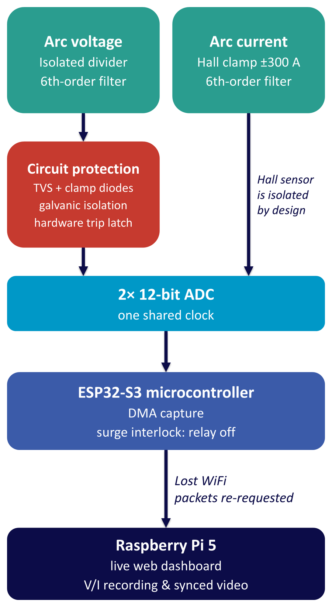
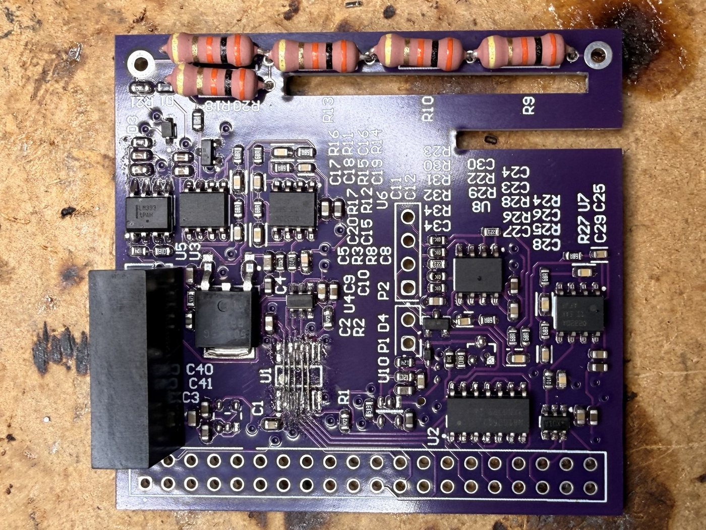
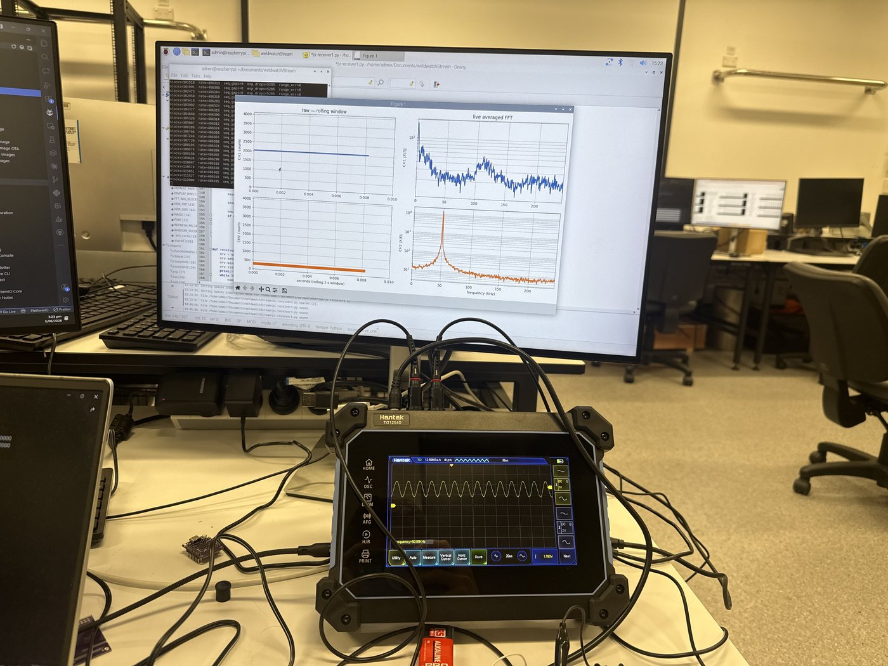
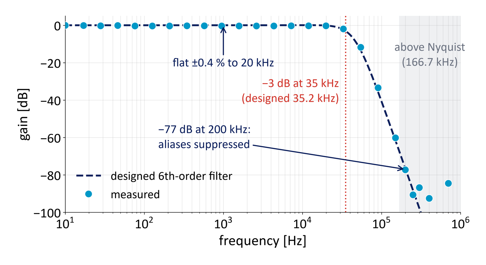
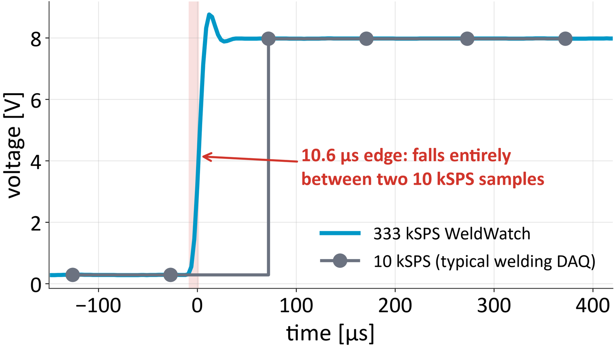
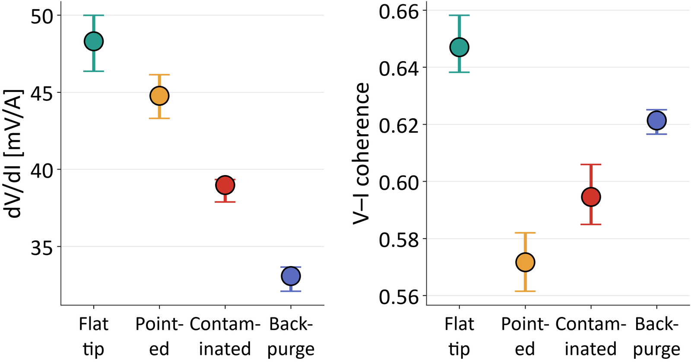
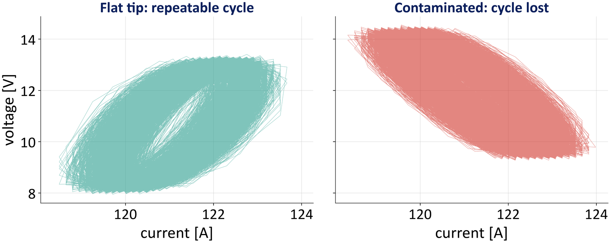
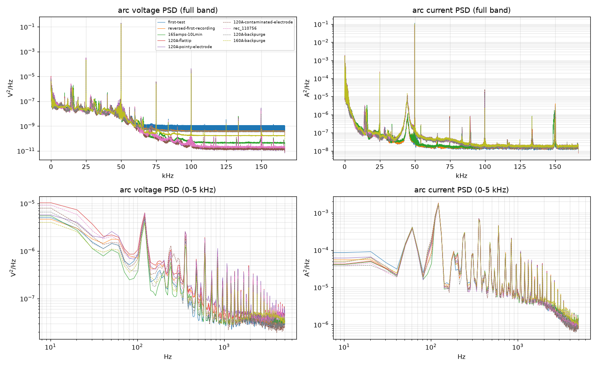

ProblemWiFi stalled every ~60 s
Bursts of ~2,000 retransmits arrived like clockwork. FixTraced to power-saving on the Raspberry Pi's WiFi radio while acting as a hotspot. Disabled and made permanent.
A clip-on monitor that records a welding arc's voltage and current 333,333 times a second, streams it live over WiFi with zero lost data, and can tell a good electrode from a bad one by its electrical fingerprint.
Each recording pairs the camera with the electrical data, captured at the same moment. Pick an electrode condition. The traces show the last second of arc voltage and current (filtered to 3 kHz for display; the raw data is 100× finer in time).
120 A TIG welds recorded 11 September 2026. Camera 15 fps; electrical data 333,333 samples/s per channel.
Replay any weld yourself → All 9 recorded welds with synced video. Zoom from the whole weld down to individual samples 3 µs apart, and watch the voltage–current loop draw itself.Many weld faults, like porosity, a contaminated tungsten or a worn electrode, can't be seen from the outside. They are usually found only when a part is cut open, X-rayed or fails. Meanwhile most workshop welders are legacy machines with no data output at all.
The arc itself carries a lot of information: its voltage and current fluctuate thousands of times a second as the arc column, electrode and weld pool interact. Welding data loggers commonly sample around 10,000 times a second, which is too slow to see much of it.

Voltage is taken across the weld terminals through an isolated resistor divider. Current is measured with a clamp-on Hall-effect sensor (±300 A), which never touches the circuit. Each channel has a 6th-order anti-alias filter before a 12-bit ADC.
Both ADCs are clocked by the ESP32-S3's I2S audio peripheral and read by DMA, so every sample is exactly 3.000 µs apart with no CPU in the timing path. Data can only ever be lost as whole blocks, never as timing jitter.
Samples go out in small UDP packets. The ESP keeps the last ~3 seconds in a retransmit buffer; the Raspberry Pi watches sequence numbers and re-requests anything that goes missing. A retry is a warning (WiFi getting busy); only data older than the buffer is a true loss.
Arc starts can put large voltage spikes on the weld leads. A TVS diode and clamp diodes absorb them, and the weld side is galvanically isolated from the electronics. A surge also sets a hardware latch, so even a microsecond-wide event can't be missed, and a 10 kV reed relay then disconnects WeldWatch from the welder. Every failure (reset, lost WiFi, latched trip) leaves the relay open.


The Raspberry Pi serves a live web dashboard (waveforms, spectra, link health) and records each weld, with video from a USB endoscope camera saved alongside. Full circuit: schematic (PDF, 4 sheets).
Before any welding we tested the system against a signal generator, then checked it on real welds. Tap any plot to open it full size.


| Measurement | Result |
|---|---|
| Bandwidth (−3 dB) | 35 kHz measured vs 35.2 kHz designed |
| Step rise time | 10.6 µs measured vs 11.1 µs predicted |
| Sample clock | +13.6 ppm, < 0.4° phase wander over 30 s |
| Current noise, in the welding bay | 90–140 mA rms (10.4–11 effective bits) |
| Voltage noise, in the welding bay | ≤ 29 mV rms (welder on, arc off; includes the welder's own output noise) |
| Data integrity | 9 welds recorded, every file complete with no gaps |
We welded at 120 A with the tungsten electrode deliberately prepared four ways: sanded flat, new and pointed, contaminated (dipped into the weld pool), and with back-purge shielding gas. Each arc was split into 0.5 s segments and analysed.



Arc brightness flickers 4–7 % for the steady flat-tip arc but 19–22 % for the pointed and contaminated electrodes, the same ranking the electrical coherence gives. Two independent sensors, one story.
Honest caveat: one weld per condition with a hand-held torch. The differences are larger than the scatter within each weld, but a robot-held torch and repeated welds are needed before this becomes a classifier.
Bursts of ~2,000 retransmits arrived like clockwork. FixTraced to power-saving on the Raspberry Pi's WiFi radio while acting as a hotspot. Disabled and made permanent.
During retransmit storms, late duplicate packets looked like the ESP32 had rebooted, so the receiver re-synced and recorded old data twice, and no loss counter noticed. FixA window check that ignores late duplicates near the current position.
Our first sweep showed bandwidth 25× worse than designed, and a circuit simulation even "confirmed" a plausible cause. FixThe real culprit was the signal generator briefly switching off every time its frequency changed. Fixing the test method revealed the circuit met its design within 1 %.
FixRe-calibrated against the welder's own setpoints across six recordings; the corrected calibration fits to within 0.2 A.
Our first noise test left the voltage input at 0 V, the bottom of the ADC range, which clips half the noise and makes the result meaningless. FixWe re-measured from the quiet seconds after each weld, when the welder is on with no arc and the voltage sits mid-range.